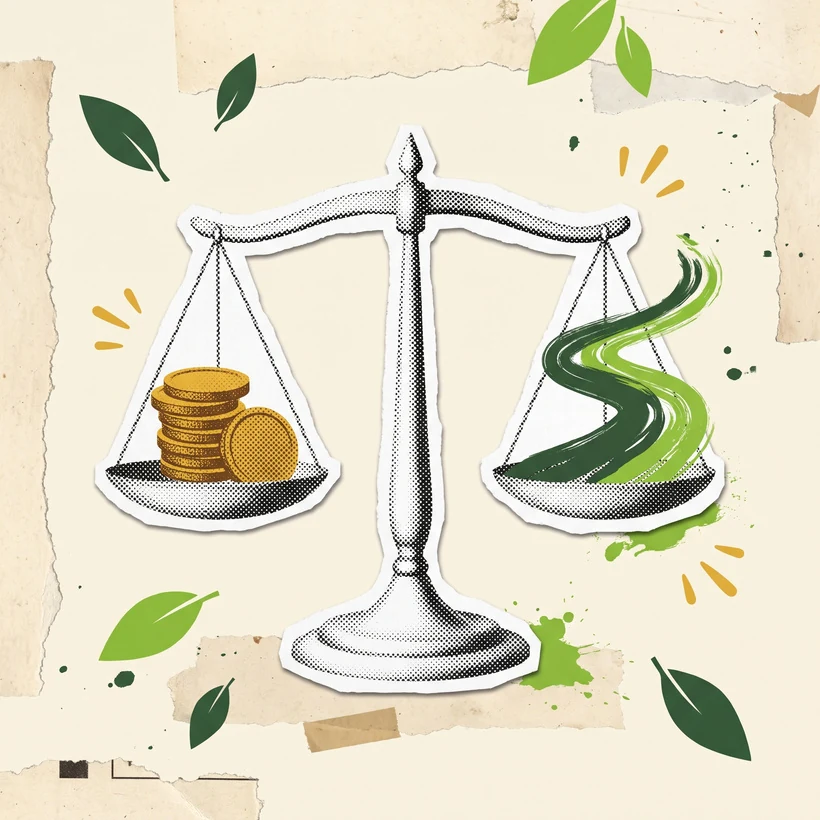

El modelo
Optimización Matemática + Algoritmo Genético
¿Qué se quiere lograr? (La Función Objetivo)
Minimizar el costo
Formular un modelo que permite llegar a una posible solución factible mediante algoritmos genéticos y que a su vez, minimice el costo total de implementar la política a evaluar, comparando y analizando distintos escenarios propuestos.
